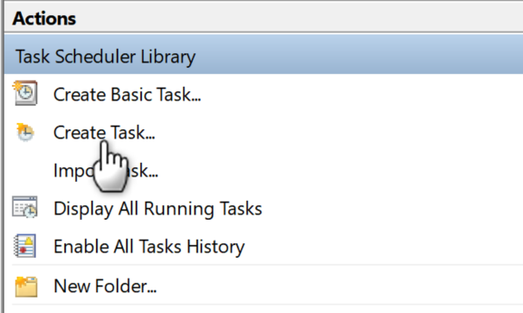
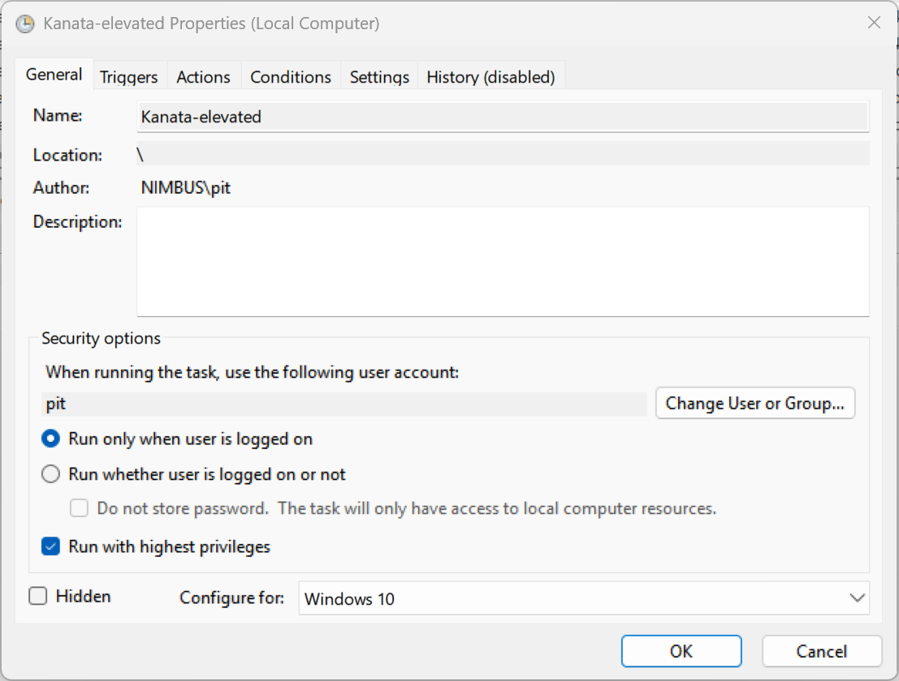
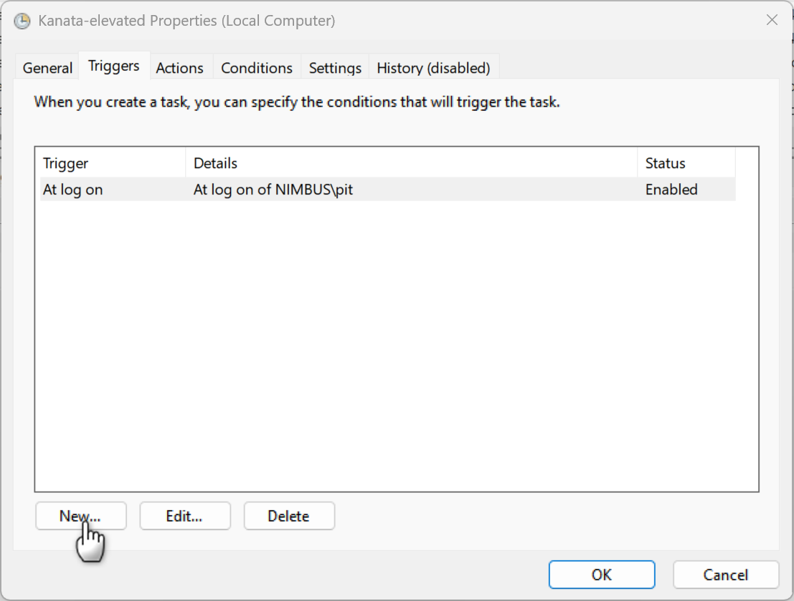
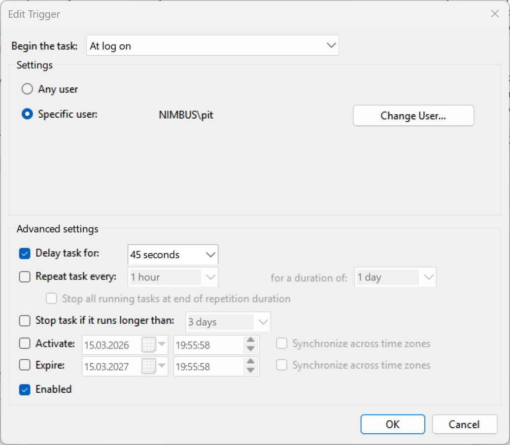
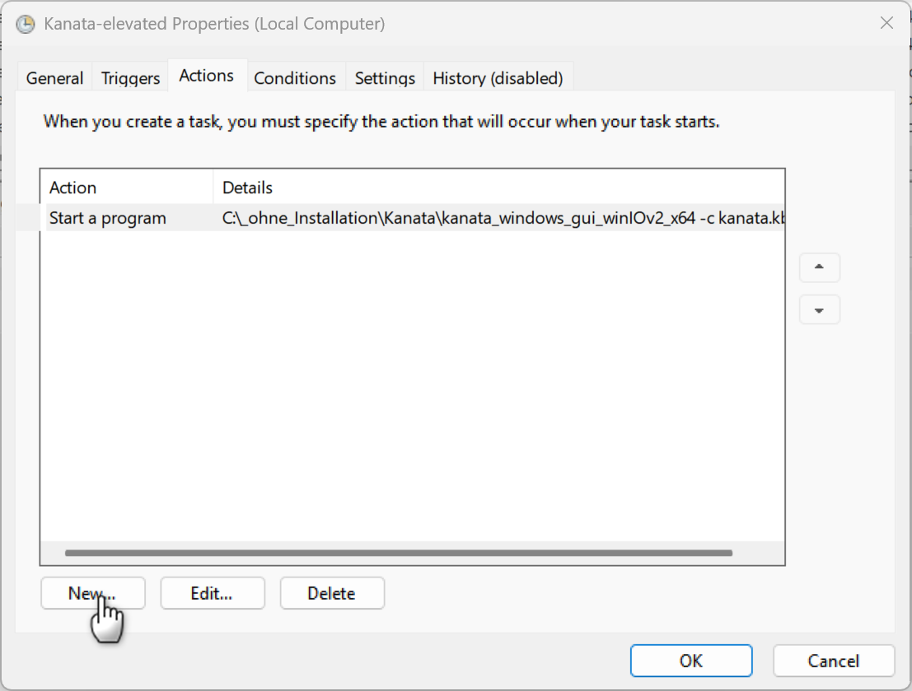
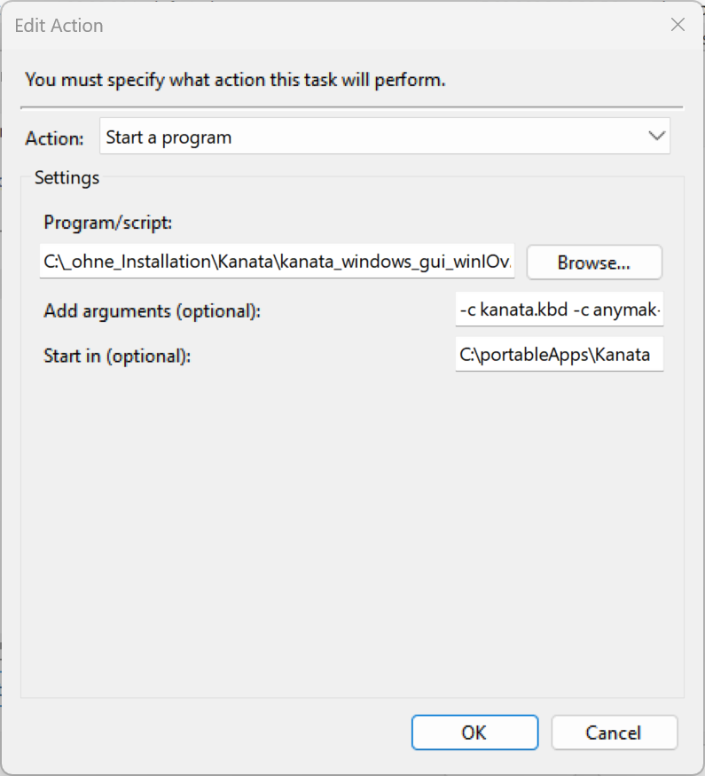
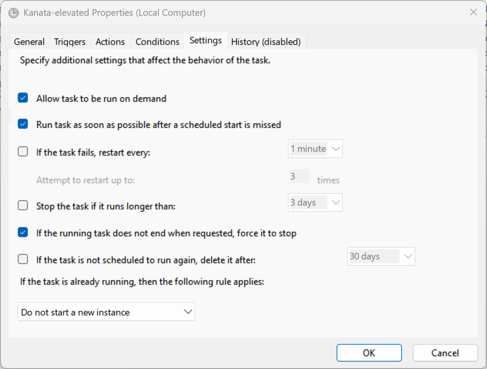

Why you cannot put Kanata in the Autostart folder
To start Kanata automatically with Windows, the Autostart folder is the obvious first choice — but it has a limitation. While placing a shortcut in the Autostart folder works for most applications, it will not work for Kanata when you need to run it with administrator rights — which is required for Kanata to function in terminal windows or other programs that might need to run elevated.
Using Task Scheduler to automatically start Kanata at login
To automatically start Kanata at logon the Task Scheduler allows
-
Save the Kanata executable in a folder where you keep your portable applications. A convenient location for most Windows users is something like
C:\portableApps\Kanata\kanata_windows_gui_winIOv2_x64.exe. -
Store your Kanata
.kbdconfig files in the same folder. If you use only one config file, naming itkanata.kbdis most convenient, as Kanata will find it automatically. You can also use multiple config files with freely chosen names. I use three: two for different keyboard layouts, and a third empty config file that effectively disables Kanata — useful for quick debugging or when someone else needs to use your PC with the default layout. -
Open Task Scheduler and create a new task by clicking Create Task under Actions on the right-hand side:

-
Under General, apply the following settings:

-
Under Triggers, create a new trigger:

and fill in the following details:

Why add a startup delay? A delay ensures Kanata does not launch before all required Windows components have loaded. Starting too early can cause Kanata to malfunction — for example, some key remaps may not respond, or the taskbar icon may not appear. Both issues are resolved with a sufficient delay. Experiment with different values to find what works for your system. On my ARM64 laptop a 15-second delay is enough, while my x86 machine needs 45 seconds to be on the safe side. Windows appears to reach a ready state faster on ARM64.
- Under Actions, create a new action:

and configure the path and parameters to match your setup:

Here are the parameters I use as an example:
- Program:
C:\portableApps\Kanata\kanata_windows_gui_winIOv2_x64.exe - Arguments:
-c kanata.kbd -c anymak-end.kbd -c kanata-zero.kbd - Start in:
C:\portableApps\Kanata
The -c parameter specifies which config file to load. You can omit it if you only use a single kanata.kbd config file.
The file kanata-zero.kbd deactivates all remapped keys:
#|
kanata config to deactivate all kanata commands (switch off basically)
|#
;; ======================================= Setup ======================================
(defcfg
process-unmapped-keys yes
concurrent-tap-hold yes
)
(defsrc)
(deflayer base)
-
On the Settings tab, apply the following options:

-
Save the task. You can test it immediately by right-clicking and selecting Run. On the next login, the task will start Kanata automatically. Note that the login screen uses the default Windows keyboard layout — Kanata is not active there.
Kanata LLHook vs. interception driver
As a side note on why this guide uses the LLHook version:
The Interception driver variant of Kanata would generally be preferable — it operates at a lower level and is active even on the login screen. However, as of March 2026 it has a significant limitation: it fails to detect the keyboard after a reconnect and requires a full system restart to recover. Work is underway on a new open-source Interception driver that would address this, but it is not yet available.
For now, the LLHook version is the more practical choice for most users. Its main limitation is that some keyboard shortcuts are not recognized correctly in certain programs — most work fine, but a few do not. This is a consequence of how the Windows keyboard input chain is structured.